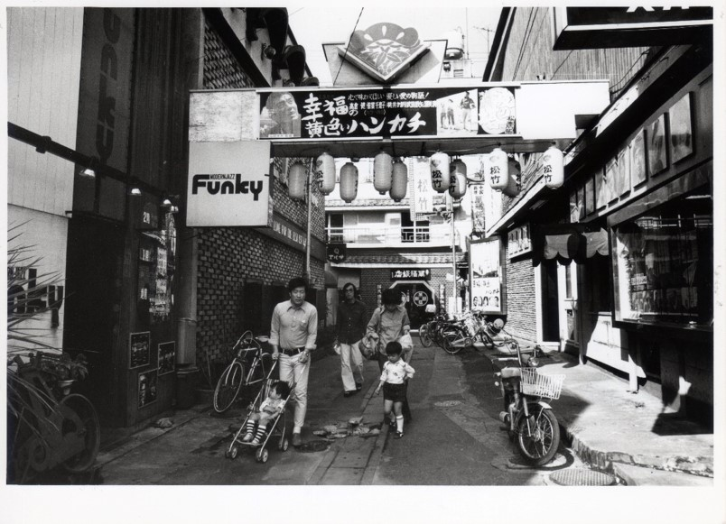
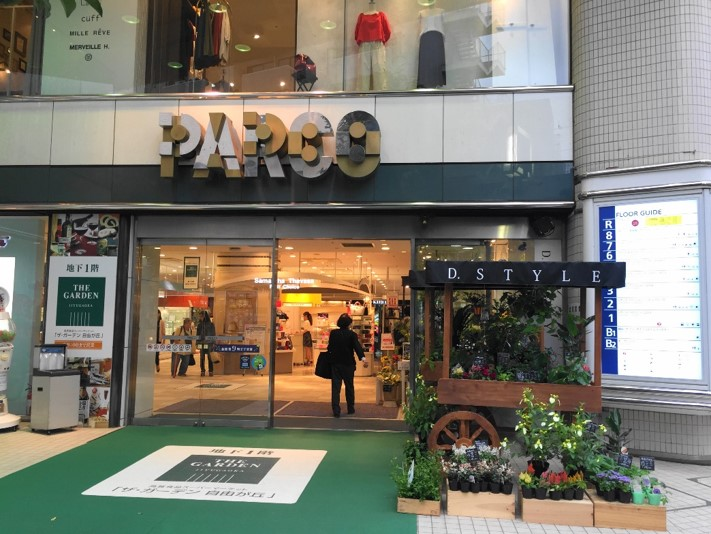

吉祥寺PARCO


『幸福の黄色いハンカチ』が上映されていることから、この写真は1977年（昭和52年）10月ごろ撮影されたと推定される。現在のPARCO正面入り口付近からPARCOを縦断するように通っていた道だ。建物がレンガでできていたことから、当時この辺りは「レンガ館」と呼ばれていた。
右に写っている吉祥寺松竹は建物も大きく、賑わっていた。吉祥寺松竹の手前には吉祥寺スカラ座が並んでいた。左に写っているFunkyはPARCOの北側に場所を移して現在も営業している 。当時はモダンジャズを売りにしていたが、現在はバー&キッチンでパーティもおこなうなど、時代とともに営業形態も少しずつ変わってきた。左奥に写っているエルザという店は「美人喫茶」だった。聞き取り調査によると、値段設定が高めで、ウェイトレス目当てに通っていた人もいた。「子どもは入ってはいけない」と言われていたそうだ。